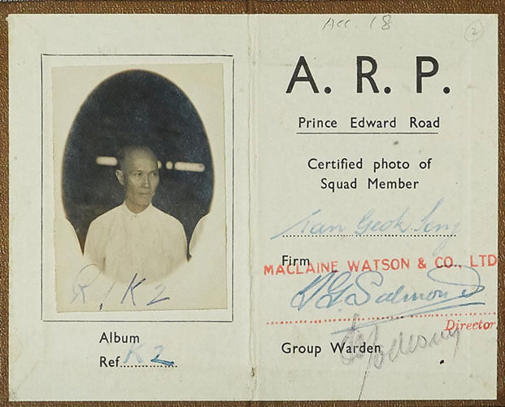

First Japanese Air Raids on Singapore 8 Dec 1941, 4:15am
A herd of 17 Japanese aircraft bomb Singapore city in the early hours. Tengah and Seletar take the first hits, and then Chinatown and Raffles Place. Reports of 61 people killed. 133 casualties.
The city sat lit up like a target, no blackout, no warning. The bombers spared no more time. It was just past 4am; while a few were already stirring, 61 people would never see the sunrise again.

Bracing for the worst
The Japanese invasion did not come as a surprise for the people in Singapore. Perhaps Britain already sensed Japan’s growing aggression, especially with the whole Manchuria war, puppet state thing, going on.
TLDR: Japan occupied a territory in Northern China called Manchuria, made it into their own puppet state called Manchukuo. Puppet: Controlled by the Japanese, Japan installed Puyi, the last emperor of China, as the figurehead to legitimize their military occupation and leadership. But in reality, Puyi was kept under constant surveillance by Japanese advisors, holding no real authority or say.
With this, western forces were pissing their pants with a newly formidable Asian power. Though there were, of course, other considerations that added to such fear.
That said, In July 1936, the British colonial government started bracing for an attack. They issued a statement, disclosing the existence of the committee: Air Raids and Bombardments Precautions Sub-committee, and the government's forethought on civilian measures if air raids were to strike.

The statement advised civilians that sirens would sound in the event of an air raid, and that people should stay in their homes until the all-clear signal was given. The subcommittee began tantalizing their works.
Air raid demonstrations, including decontamination and rescue drills, lectures, the distribution of pamphlets and blackout exercises were subsequently carried out.
There were also blackout exercises launched from 1939 all the way through to 1941.
The first blackout exercise in Singapore was held on 16 March 1939 to educate the public to turn off all lights to deter enemy bombers in case of an attack. Multiple more blackout exercises were carried out for the next two years, till 1942.
Civilian air raid wardens were recruited to disseminate information and assistance during raids, and by November 1939, there were around 3,500 Air Raid Precautions (ARP) wardens and another 1,200 St John Ambulance Brigade members.

The recruitment of volunteers for civil defence units began in 1939. These civil defence units, which started conducting training, included the Air Raid Precautions (ARP), Medical Auxiliary Service, Observer Corps, Fire-fighting Squad and the Special Constabulary. Some 6,000 men and women volunteered.
Ang Seah San, a bookkeeper at Lexus Borneo Motors Limited, was picked by his company for training at the Passive Defence Services in 1941, equipping himself in firefighting and first aid. He also learned how to manage civilians and “what precautions to take in order to minimise injuries to persons and damages to properties”.
Ang recalled practising air raid drills. When the air raid siren sounded, “wardens on duty were ordered to patrol the streets… householders would comply with our instructions, such as the taking of cover in the shelter and switching off the lights at night, advising pedestrians to cover, to take cover wherever possible. Vehicles travelling on the road were ordered to park by the roadside with lamps, headlamps switched off… In order that the public might be acquainted with the requirements, these exercises had been continually practised for about a month or so”.

At the same time, some decided that they wanted to be in the frontlines of protecting the island, by learning to take up armed equipment to fight. One option was to join the Singapore Volunteer Corps (SVC).
The SVC had played an important role in suppressing any physical conflicts amongst the people and preserving the security of the island. Duties included operating defence lights and manning harbour defences.
Prior to the Japanese invasion, those part of the SVC went through large-scale training, which included volunteer corps from Singapore (two battalions), Penang (one battalion) and Malacca (one battalion).
Other resistance groups were also set up, such as Dalforce, a volunteer army formed by the local Chinese community. It was named after its commander, Lieutenant Colonel John Dalley of the Federated Malay States Police Force. Although Dalforce consisted of volunteers who were genuinely passionate in protecting the island, they lacked the correct training.
Britain was actively strengthening its defences in Singapore with a newly constructed naval base. A naval base was built in Sembawang, with huge guns positioned in strategic locations along Singapore’s coastline to eliminate potential naval attacks.
In 1938, Governor Thomas opened what was then the world’s biggest dry dock at the naval base.
Bomb shelters were set up in Tiong Bahru, and evacuation camp registration centres were established in the east and west coast districts of Singapore and in Geylang in 1941.
Doomsday

In the wee hours of 8 December 1941, Japanese invasion forces were practically knocking on the doors of Singapore’s shores as they landed at Kota Bharu (in the Malayan state of Kelantan) and on the Thai coast of Singora and Pattani.
At 1.15 am, Governor Thomas was informed of the Japanese landings and instructed the Straits Settlements police to begin Operation Collar and Trousers: arrest and internment of all Japanese and their sympathisers in Malaya.
At 2.30 am, Thomas was attending a meeting at the Singapore Naval Base with senior military officers, however, the meeting was halted with Japanese bombers attacking Singapore about two hours in.
At 3.30am, leading up to the attack, the Fighter Control Operations Room was notified of aircraft approaching Singapore from the northeast, with the help of radar monitoring. The island's land, air and naval forces, as well as anti-aircraft guns, were immediately put on standby.
At the time, Singapore was equipped with about 40 3.7-inch heavy anti-aircraft guns, capable of reaching targets above 20,000 feet. But later during the attack, all these appeared more like decorations as it proved useless in deterring the Japanese bombers on the 8th of December, and all of the air raids to come.
A little after 4am, 17 Japanese naval bombers that had taken off from Saigon, Vietnam, attacked the Tengah and Seletar airfields, during which the defending Allied forces stayed back from the Japanese bombers in the skies, as they feared the anti-aircraft gunners would be unable to discern Japanese and Allied aircraft.
This allowed for the Japanese’s easy victory as over the next 10 minutes, Japanese bombs successfully struck several targets across the island, including Chinatown, Raffles Place and Keppel Harbour, causing 61 casualties and 133 injuries.
Years worth of dedicated precautionary air raid measures were thrown away in mere minutes. Upon hearing blasts, many rushed outside, with some mistaking it as another air raid exercise.
City lights remained lit during the air raid, as the officer in charge of the switchboard had gone to the movies, with the keys in his possession.
There was also a delay in activating the Air Raid Precautions scheme, with some reports that Thomas had forbidden the activation of air raid warning sirens without his approval.
Thus, only at 4.15am, right after the bomb attack, were the air raid sirens finally sounded.
Lun Yue Sheong, a survivor of the air raid, recalled how the bombs killed numerous people on Upper Cross Street. He also described how a bomb struck Tai Thong Restaurant, which was packed with patrons at the time since it was close to breakfast hour. Fortunately, the bomb did not detonate because it “got stuck in the kitchen floor on the third” level of the restaurant.
Another witness, Lee Tian Soo, a resident in Chinatown, recounted, “not until some people went down to the spot to see the buildings being brought down by the bombs and saw the casualties did they realise it was war. That was the time people started to rush everywhere, anywhere to any ground to build air raid shelters.”
Flight or fight?
War was now a reality. In the following weeks, Christmas lights had to be put out, as a form of safety measure, and a blackout regime was carried out, as only searchlights were permitted to look out for enemy planes.
The authorised dim and black streets were almost like a reflection of the plight Singaporeans would endure over the next three years.
The first bombs also kind of confirmed for everyone that Singapore will not be spared from war. As such, a handful began escaping to the countryside.
Tan Guan Chuan, who was in government service and a volunteer with the Air Raid Precautions, witnessed how people fled to the countryside when the first bombs struck on 8 December 1941.
“You find cars running from the city all right up to the remote parts of Singapore to escape from the bombs that were dropping… everybody just [took] their families and [drove] to any [relatives] who are staying far away from the city.”